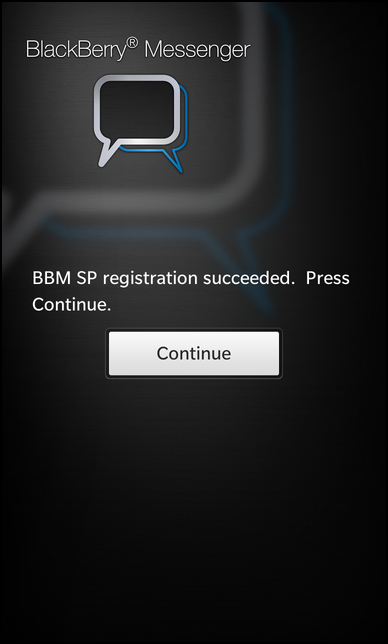

Files:
The BBM Registration example demonstrates how to register an application at the BBM Social Platform.

In this example we'll learn how to use the Context class of the bb::platform::bbm module to register our application at the BBM Social Platform. This example encapsulates the registration inside the C++ class RegistrationHandler, so that it can easily be reused in other examples our by your own application. It is exported to QML under the name '_registrationHandler'.
The startup of a typical BBM-enabled application consists of two phases. In the first phase the application tries to register at the BBM service. While the registration is in progress, the BBM module will show an ActivityIndicator and a status message inside a dialog. If the registration was successful, the application either continues directly to the main UI of the application, or it shows a status message and waits for user interaction to continue. In the second phase, the actual main UI of the application is initialized and the remaining business logic, which depends on an available BBM connection, is set up.
In this example we show the user a status message after the registration step and wait for explicit user interaction before we continue to the main UI.
The status message, which is shown during and after the registration, is implemented in registration.qml.
Container { horizontalAlignment: HorizontalAlignment.Center verticalAlignment: VerticalAlignment.Center Label { horizontalAlignment: HorizontalAlignment.Center text: _registrationHandler.statusMessage textStyle { base: SystemDefaults.TextStyles.BodyText color: Color.White } multiline: true } Button { horizontalAlignment: HorizontalAlignment.Center visible: _registrationHandler.temporaryError text: qsTr("Connect to BBM") onClicked: { _registrationHandler.registerApplication() } } // Display the main page if the user chooses to Continue Button { horizontalAlignment: HorizontalAlignment.Center visible: _registrationHandler.allowed text: qsTr("Continue") onClicked: { var mainPage = mainComponent.createObject(); navigationPane.push(mainPage); } } }
It consists of a Label that shows the status message as provided by the RegistrationHandler, and a Button to let the user continue to the main UI, and another Button that is only visible upon encountering an error, which let's you retry the registration process.
onCreationCompleted: { navigationPane.push(page); _registrationHandler.registerApplication(); }
After the UI is completely initialized, we automatically trigger the registration by calling the registerApplication() method of the RegistrationHandler.
The RegistrationHandler class encapsulates the registration process, so that it can easily be reused in other applications.
class RegistrationHandler : public QObject { Q_OBJECT // Flag indicating whether the application is successfully registered // with BBM. Q_PROPERTY(bool allowed READ isAllowed NOTIFY stateChanged) // The status message describing the registration process. Q_PROPERTY(QString statusMessage READ statusMessage NOTIFY stateChanged) // Flag indicating whether registration failed due to a temporary error. // This allows the user to re-try registration. Q_PROPERTY(bool temporaryError READ isTemporaryError NOTIFY stateChanged) public: // Enumerates the possible registration progress states. struct BbmRegistrationProgress { enum Type { // Registration has not started and has never been attempted since // the application started. NotStarted = 0, // Registration has started. Started, // Registration is in progress. Pending, // Registration is done. Use isRegistered() or // Context::isAccessAllowed() to check if the application is // registered successfully. Finished }; }; /** * Creates a new registration handler. * * @param uuid The unique ID of the application * @param parent The parent object */ RegistrationHandler(const QUuid &uuid, QObject *parent = 0); /** * Returns the BBM context that is associated with this application. */ bb::platform::bbm::Context& context() { return m_context; } /** * Returns the registration progress. * @see BbmRegistrationProgress::Type */ BbmRegistrationProgress::Type progress() const { return m_progress; } public Q_SLOTS: /** * This method is called to trigger the registration with the BBM Social * Platform. Check the progress prior to calling this function to ensure * that another registration is not in progress. */ void registerApplication(); Q_SIGNALS: // The change notification signal of the properties. void stateChanged(); private Q_SLOTS: // This slot is invoked whenever the registration status is changed. // This will initiate, continue, or finish registration based on the status. // @param state is the registration state void processRegistrationStatus(const bb::platform::bbm::RegistrationState::Type state); // This slot is invoked when the uuid is invalid or NULL. // This will cause the application to exit with error code -1 // @param value is the system ui result indicating which button was pressed void dialogFinished(bb::system::SystemUiResult::Type value); private: // Return true if registration has completed successfully. bool isAllowed() const { return m_isAllowed; } // Return true if registration failed due to a temporary error. bool isTemporaryError() const { return m_temporaryError; } // Return the message that describes the registration state. const QString& statusMessage() const { return m_statusMessage; } // Registration finished. This method updates m_registered, m_statusMessage, // and m_progress. It emits a stateChanged() signal. void registrationFinished(); // BBM Social Platform Context used to gain access to BBM functionality. bb::platform::bbm::Context m_context; // A flag that indicates whether registration completed successfully. bool m_isAllowed; // Registration progress. Use this to check if you have already attempted // registration, if registration has finished, or it's still in progress. BbmRegistrationProgress::Type m_progress; // A flag that indicates whether registration failed due to a temporary // error. bool m_temporaryError; // A status message that describes the current state of registration. QString m_statusMessage; };
It provides properties to be informed about the current status and a slot to trigger the registration and a signal to be notified when we can continue to the main UI.
RegistrationHandler::RegistrationHandler(const QUuid &uuid, QObject *parent) : QObject(parent) , m_context(uuid) , m_isAllowed(false) , m_progress(BbmRegistrationProgress::NotStarted) , m_temporaryError(false) , m_statusMessage(tr("Please wait while the application connects to BBM.")) { QmlDocument* qml = QmlDocument::create("asset:///registration.qml") .parent(this); qml->setContextProperty("_registrationHandler", this); AbstractPane *root = qml->createRootObject<AbstractPane>(); Application::instance()->setScene(root); bool ok = false; if (uuid.isNull()) { SystemDialog *uuidDialog = new SystemDialog("OK"); uuidDialog->setTitle("UUID Error"); uuidDialog->setBody("Invalid/Empty UUID, please set correctly in main.cpp"); ok = connect(uuidDialog, SIGNAL(finished(bb::system::SystemUiResult::Type)), this, SLOT(dialogFinished(bb::system::SystemUiResult::Type))); Q_ASSERT(ok); uuidDialog->show(); return; } ok = connect(&m_context, SIGNAL(registrationStateUpdated( bb::platform::bbm::RegistrationState::Type)), this, SLOT(processRegistrationStatus( bb::platform::bbm::RegistrationState::Type))); Q_ASSERT(ok); }
In the constructor the member variables are initialized, the UUID is checked, and the UI is loaded from the registration.qml file. One of the member initializations being a new Context object that is bound to the unique ID of the application. Afterwards, we connect a custom slot against the registrationStateUpdate() signal of the context to get informed about status changes.
void RegistrationHandler::registerApplication() { m_progress = BbmRegistrationProgress::Started; processRegistrationStatus(m_context.registrationState()); }
When the UI is completely initialized, the registerApplication() slot is invoked. This in turn sets the registration progress status to started and invokes the processRegistrationStatus() method.
void RegistrationHandler::processRegistrationStatus(const RegistrationState::Type state) { // Based on the state, decide whether we need to register. If we already // registered successfully once (i.e. on a previous application run), then // we will not call requestRegisterApplication() again. qDebug() << "Received a BBM Social Platform registration access state=" << state; switch(m_progress) { case BbmRegistrationProgress::Pending: if (state != RegistrationState::Pending) { registrationFinished(); return; } // Otherwise, ignore since registration is still in progress. break; case BbmRegistrationProgress::Started: if (m_context.isAccessAllowed()) { // Access is allowed, the application is registered. registrationFinished(); return; } if (m_context.registrationState() == RegistrationState::Unknown) { // Status is not yet known. Wait for an event that will deliver the // status. qDebug() << "BBM Social Platform access state is UNKNOWN; waiting " "for the initial status"; return; } // Start registration. if (m_context.requestRegisterApplication()) { // Registration started. The user will see a dialog informing them // that your application is connecting to BBM. m_progress = BbmRegistrationProgress::Pending; qDebug() << "BBM Social Platform registration started"; qDebug() << "Verify you are using a valid UUID"; return; } // Could not start registration. No dialogs were shown. qDebug() << "BBM Social Platform registration could not be started"; registrationFinished(); break; case BbmRegistrationProgress::Finished: if (m_context.isAccessAllowed() != m_isAllowed) { // Access to the BBM Social Platform has changed. registrationFinished(); } break; default: qDebug() << "Ignoring BBM Social Platform access state=" << state << "when progress=" << m_progress; break; } }
If an error occurs or the registration is started, the custom registrationStatus() slot is invoked. We check the state that is passed as parameter and call registrationFinished() upon its success or error. Finally we call requestRegisterApplication() to let the Context object do the low-level work of the registration, when the registration progress is in the started state.
void RegistrationHandler::registrationFinished() { // Finish registration and use the state to decide which message to show // the user. m_progress = BbmRegistrationProgress::Finished; switch (m_context.registrationState()) { case RegistrationState::Allowed: m_statusMessage = tr("Application connected to BBM. Press Continue."); m_temporaryError = false; break; // This error code is not yet available in the NDK. // case RegistrationState::BbmDisabled: // m_statusMessage = tr("Cannot connect to BBM. BBM is not setup. " // "Open BBM to set it up and try again."); // m_temporaryError = false; // break; case RegistrationState::BlockedByRIM: m_statusMessage = tr("Disconnected by RIM. RIM is preventing this " "application from connecting to BBM."); m_temporaryError = false; break; case RegistrationState::BlockedByUser: m_statusMessage = tr("Disconnected. Go to Settings -> Security and " "Privacy -> Application Permissions and " "connect this application to BBM."); m_temporaryError = false; break; case RegistrationState::InvalidUuid: // You should be resolving this error at development time. m_statusMessage = tr("Invalid UUID. Report this error to the " "vendor."); m_temporaryError = true; break; case RegistrationState::MaxAppsReached: m_statusMessage = tr("Too many applications are connected to BBM. " "Uninstall one or more applications and try " "again."); m_temporaryError = false; break; case RegistrationState::Expired: case RegistrationState::MaxDownloadsReached: m_statusMessage = tr("Cannot connect to BBM. Download this " "application from AppWorld to keep using it."); m_temporaryError = false; break; case RegistrationState::NoDataConnection: m_statusMessage = tr("Check your Internet connection and try again."); m_temporaryError = true; break; case RegistrationState::Pending: // The user will never see this. The BBM Social Platform already // displays a "Connecting" dialog. m_statusMessage = tr("Connecting to BBM. Please wait."); m_temporaryError = false; break; case RegistrationState::Unknown: m_statusMessage = tr("Determining the status. Please wait."); m_temporaryError = false; break; case RegistrationState::Unregistered: case RegistrationState::UnexpectedError: case RegistrationState::TemporaryError: case RegistrationState::CancelledByUser: default: // If new error codes are added, treat them as temporary errors. m_statusMessage = tr("Would you like to connect the application to " "BBM?"); m_temporaryError = true; break; } if (m_context.isAccessAllowed()) { m_isAllowed = true; } else { m_isAllowed = false; } qDebug() << "Finished BBM Social Platform registration, success=" << m_isAllowed << "temporaryError=" << m_temporaryError; emit stateChanged(); }
Upon processRegistrationStatus() success or error occurrence this method is invoked and it reports the status message, be it an error, success or other, by updating the property variables and emitting the stateChanged() signal. The property 'm_isAllowed' is updated to either 'false' or 'true' to signal that registration failed or succeeded. If the 'm_isAllowed' property is 'true' after a successful registration, the 'Continue' button in the UI becomes visible. When the user clicks on this button, a dynamic component is created using the 'main.qml' template, and is pushed on top of the NavigationPane stack to transition you from the first to second phase.
The App class in this example is a dummy class that represents the main component in a real application.
class App : public QObject { Q_OBJECT // Add your Q_PROPERTY declarations here. public: App(QObject *parent = 0); public Q_SLOTS: void show(); // Add your slot declarations here. Q_SIGNALS: // Add your signal declarations here. };
It provides a slot show(), which initializes the main UI and does further setup of the BBM context dependent business logic.
void App::show() { QmlDocument *qml = QmlDocument::create("asset:///main.qml").parent(this); // Provide access to signals, slots and properties of App to QML qml->setContextProperty("_app", this); AbstractPane *root = qml->createRootObject<AbstractPane>(); Application::instance()->setScene(root); // Do further initialization // You can use RegistrationHandler::context() now to access the bound BBM context }